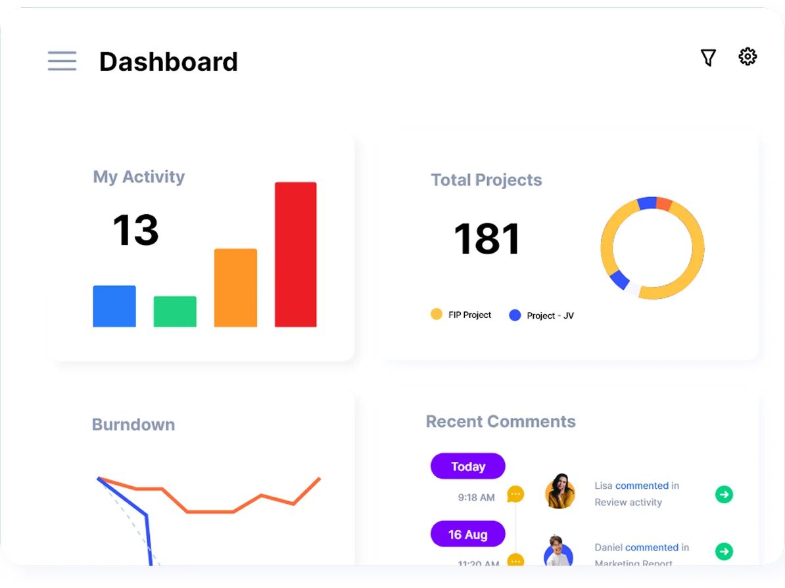
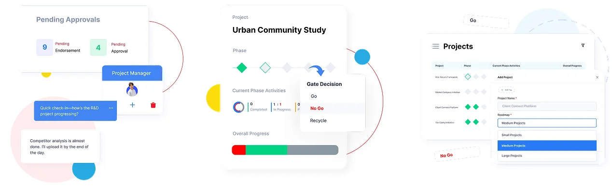

Capital investmentA proposal is drafted, evaluated and approved in phases, with a recorded decision at every gate.
case study
Planally
Planally turns business processes into structured workflows: work moves through phases, each with an owner, and a phase can’t start until the one before it is approved. When I joined, it was called RevaEDGE, and the platform worked but the UI looked dated. I helped rebrand it as Planally, brought the UI up to date and turned it into reusable assets for the platform’s Storybook.
role
UI/UX Designer
One of two designers on the platform. I helped create the Planally logo and colours, refreshed the UI of the dashboard and the gated workflow screens, and prepared the reusable components the team documents in Storybook.
problem
When I joined, the UI was
- Visually dated
- Built screen by screen, without shared components
- Dense where decisions happen: phases, gates and approvals
Who uses it
Internal auditAudit teams track findings and follow-ups through each phase until they’re closed.
New product launchesEach phase hands off to the next team only once the gate before it says go.
Leadership and PMOOne view of every project: what’s moving, what’s stuck and who needs to act.
Helped rebrand RevaEDGE as Planally
Along with the UI refresh, the product got a new name. I helped design the Planally logo and its colours, then carried them into the refreshed screens so the brand and the product look like one thing.
before · RevaEDGE
after · Planally
- #28AAE1
- #EA1F27
- #FDDC0D
Refreshed the dashboard
The dashboard gives a quick read on what’s in progress, what’s stuck and how each project is tracking, so people know where to look first. It’s built from the same cards, charts and lists as the rest of the platform.

Redesigned the gated workflow screens
A phase can only start once the one before is approved. I redesigned the phase tracker, the Go / No Go decision and the pending approvals, so it’s always clear what’s blocking what, and who needs to act.

Challenges
-
the challenge
Updating a product people already rely on
Teams ran real approvals on Planally every day. A redesign that moved everything around would have made them relearn their own workflows.
what I did
Kept the flows and structure people knew, and updated the layer they see: type, spacing, colour and components, screen by screen.
-
the challenge
A lot to show where decisions happen
One project can carry phases, gates, owners, approvals and comments, and they all compete for the same screen.
what I did
Gave the decision the most weight: the gate reads as a clear Go / No Go, the phase tracker shows where the project stands, and pending approvals sit where the approver will see them first.
-
the challenge
Two designers, one product
With screens designed one by one, the same button or card could come out a little different each time, and developers rebuilt it again and again.
what I did
Prepared reusable assets for the platform’s Storybook: components with their states and variants, so both designers and the developers work from the same set.
outcome
A new name and identity, a refreshed UI that teams didn’t have to relearn, and a shared component set in Storybook that new screens are built from.